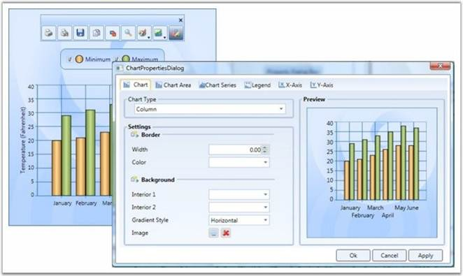
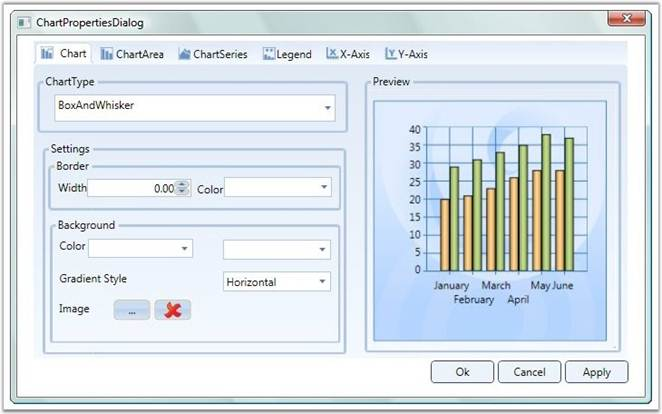
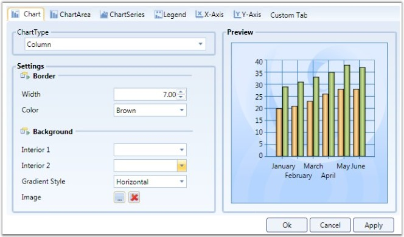
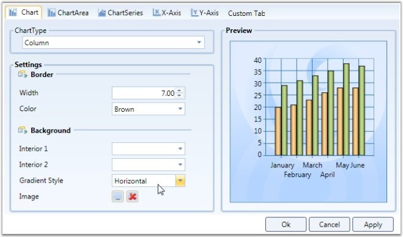

This topic provides an introduction to Property Settings Dialog. Property Settings Dialog lets you to change the properties of the chart during runtime.
This topic encapsulates the following details:
· Property Settings Dialog
· What are all the properties that can be set?
· Advantages Of Property Settings Dialog
· Special Features of Property Settings Dialog
Property Settings Dialog
Essential Chart for WPF provides the Property Settings Dialog, to change the properties of the chart during runtime. This is to provide the developer, the ability to change the chart properties without the using the code.
There are two ways to invoke this dialog. They are, Using Tool Bar and ShowPropertyDialog. The following section will brief these two options.
Using ToolBar
By clicking the Properties Tool Item in the Toolbar, the property settings dialog can be invoked.

Figure 243: Properties Tool Item in the Toolbar clicked to open the Chart Properties Dialog Box
Using ShowPropertyDialog
The API, Show Propert dialog, helps you to invoke the property settings dialog.
|
[C#]
// Invokes the property dialog box. private void PropertyDialogbtn_Click(object sender, RoutedEventArgs e) { if (Chart1 != null) { Chart1.ShowPropertyDialog(); } } |
|
[VB]
' Invokes the property dialog box. Private Sub PropertyDialogbtn_Click(ByVal sender As Object, ByVal e As RoutedEventArgs) If Chart1 IsNot Nothing Then Chart1.ShowPropertyDialog() End If End Sub |
Setting Properties
The property settings dialog allows you to set various properties of the chart. The chart properties are grouped together according to their functionality. The Property Settings Dialog contains the following Tab items.
· Chart
· Chart Area
· Chart Series
· Legend
· x-axis
· y-axis
|
Tab Item |
Description |
|
Chart |
contains the properties specifically related to Chart For example, Chart Background property, Chart Border property, and so on. |
|
Chart Area |
contains the properties specifically related to Chart Area For example, Chart Area Background property. |
|
Chart Series |
contains the properties specifically related to Chart Series For example, SeriesNumber, AdornmentInfo, and so on |
|
Legend |
contains the properties specifically related to Legend For example, RowCount, ColumnCount, and so on. |
|
X-Axis |
contains the properties specific to Primary axis of the Chart For example, AxisLineWidth, AxisTitle, and so on. |
|
Y-Axis |
contains the properties specific to Secondary axis of the Chart, which is similar to x-axis tab |

Figure 244: Property Settings displayed in the Chart Properties Dialog Box
The modified settings can be applied to the Main Chart when you click Apply or Ok.
Methods
1. Custom Tab
The WPF Chart property settings dialog allows you to add your own custom tabs in the dialog. The added custom tab also has features through other tabs, like initializing the properties, changing the settings of the properties, Applying settings to the main chart. The following segment will illustrate this special feature.
This option is to allow the developer to add his/her own tab into the property settings dialog. To add custom tab, AddCustomTabs API is used.
|
[C#]
// Adding the Custom Tab private void AddTab_Click(object sender, RoutedEventArgs e) { tbi.Header = "Custom Tab"; Chart1.AddCustomTabs(tbi); } |
|
[VB]
'Adding the Custom Tab Private Sub AddTab_Click(ByVal sender As Object, ByVal e As RoutedEventArgs) tbi.Header = "Custom Tab" Chart1.AddCustomTabs(tbi) End Sub |

Figure 245: Custom tab added to the Chart Properties Dialog Box
|
[C#]
//Adding the custom tab in the propertdialog Chart1.AddCustomTabs(tabItem); |
2. Hiding the Tab
You can hide the tab that is not required using the Chart.HideTabItem(tabIndex) method.

Figure 246: Legend tab hidden by using the HideTabItem Method
|
[C#]
//To hide the ChartSeries Tab. Chart1.HideTabItem(3); |
Events
Various events that can be used while invoking a property Dialog are listed below:
1. Initialize CustomTab Page
The InitializeCustomTabPages event is used to intialize the Custom tab that is created using the above code.
|
[C#]
//event raised Chart1.InitializeCustomTabPages += new RoutedEventHandler(Chart1_ItemAdded);
//Initialize the custom tab:
private void AddTab_Click(object sender, RoutedEventArgs e) { //Tab item Initialization } |
2. Apply Custom Tab Page
The Custom Tab page properties can be applied to the Main chart, similar to applying property settings available in the other tabs. This can be achieved by raising the ApplyCustomTabPages event.
|
[C#]
// Event raising
Chart1.ApplyCustomTabPages += new RoutedEventHandler(Chart1_ItemApplied);
//Applying the Custom tab item void Chart1_ItemApplied(object sender, RoutedEventArgs e) { //Code for applying the custom tab item. } |
For more details, refer to the sample in the following location:
...\My Documents\Syncfusion\EssentialStudio\<Version Number>\WPF\Chart.WPF\Samples\3.5\WindowsSamples\User Interaction\Property Dialog Demo